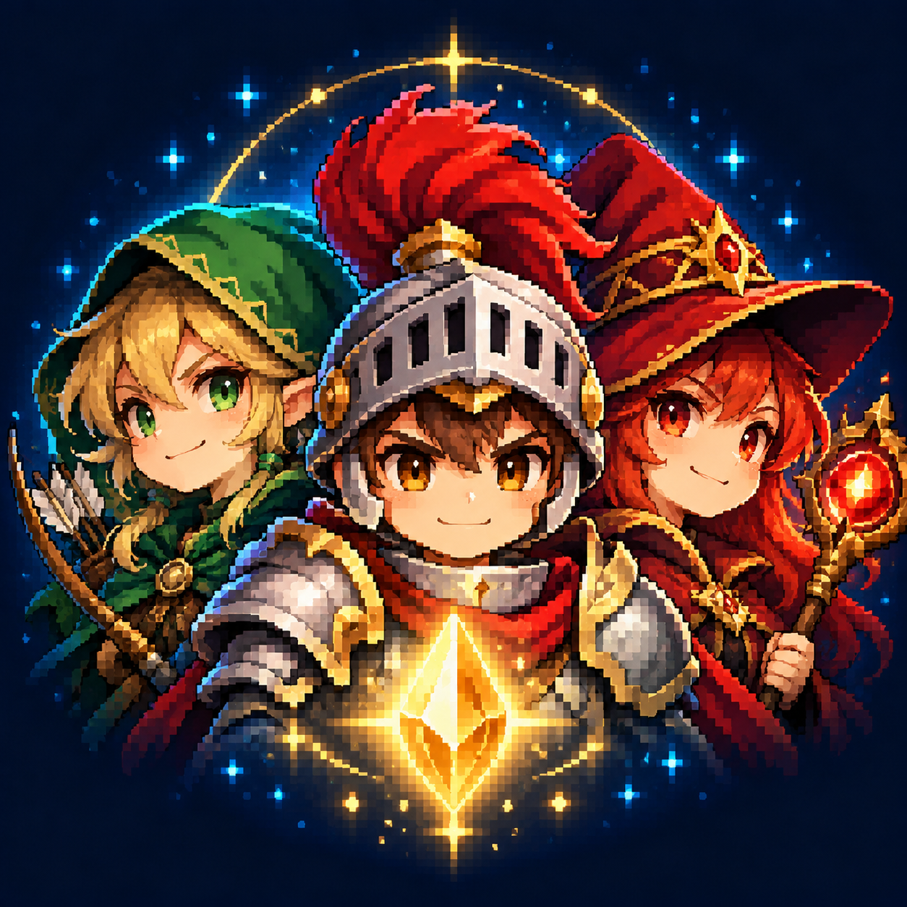
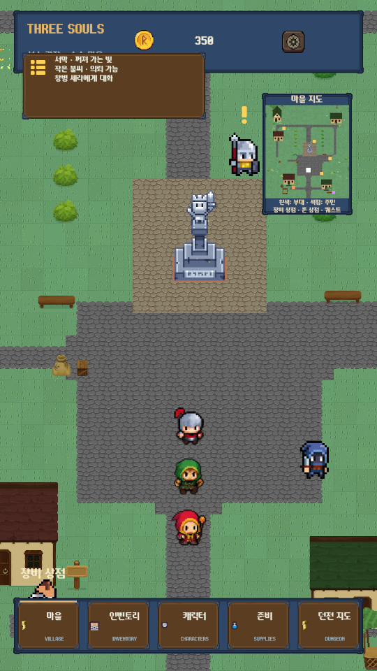
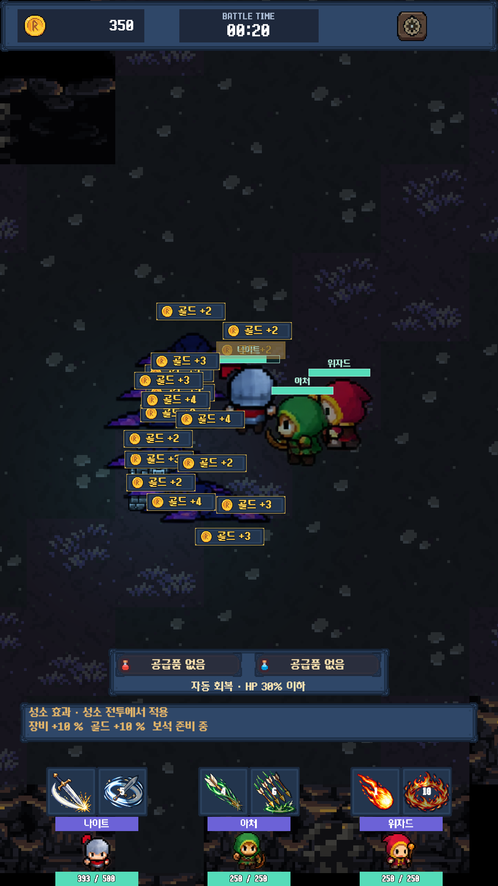

부대를 준비하세요
영웅별 장비를 비교하고 교체합니다. 스킬 룬을 제작·강화하고, 회복 물약과 자동 회복 기준을 준비합니다.

THREE SOULSANDROID GAME · DEVELOPMENT PORTFOLIO
기사, 궁수, 마법사.
세 영웅과 함께 준비하고, 탐험하고, 성장하는
작은 픽셀 판타지 RPG.
로그인 없이 플레이 · 기기 저장 · 세로 화면


THE GAME LOOP
자동 이동과 기본 공격 위에
장비, 스킬 룬, 공급품의 선택을 더했습니다.
영웅별 장비를 비교하고 교체합니다. 스킬 룬을 제작·강화하고, 회복 물약과 자동 회복 기준을 준비합니다.
기사·궁수·마법사가 함께 이동하고 싸웁니다. 던전과 스테이지를 선택하고 전투 중 스킬을 사용합니다.
골드와 장비를 획득하고 마을로 돌아옵니다. 부대의 공통 레벨·경험치와 영웅별 능력치 강화로 다음 전투를 준비합니다.
IN-GAME GALLERY
이미지를 누르면 전체 화면을 볼 수 있습니다.
개발·검증 중 촬영한 실제 화면입니다.
BUILDING THREE SOULS
자동 이동·공격, 직업별 스킬과 장비 전리품을 연결하고 던전 선택에서 전투 결과까지의 흐름을 구성했습니다.
인벤토리, 장비 강화, 영웅 성장, 룬 제작과 NPC 의뢰를 연결했습니다. 공통 경험치와 영웅별 강화를 분리했습니다.
테이블 가져오기, 저장 복구, 반복 씬 로딩, UI 팝업 순서와 Android 뒤로가기를 검증했습니다.
서명 APK와 원격 콘텐츠 배포를 연결했습니다. 공개 체험판은 로그인과 실제 광고를 사용하지 않고 기기에 진행을 저장합니다.
게임 씬·이미지를 Addressables로 내려받도록 분리하고, 성공한 빌드 뒤 GitHub Pages에 카탈로그와 번들을 함께 게시합니다.
Addressables · GitHub Pages · 빌드 검증아틀라스와 자산의 수명을 연결하고, Unity 아틀라스 등록 콜백을 통해 씬 재진입 때 텍스처 연결을 복구했습니다.
SpriteAtlas · 반복 전투 / 마을 복귀 검증로컬 저장·백업·복구와 저장 마이그레이션을 구성했습니다. Google Play Games와 Unity 클라우드 연동도 별도 실기기에서 검증했습니다.
로컬 저장 · Cloud Save · 공개 APK는 로컬 전용Google Sheets의 문자열 테이블을 CSV·JSON·Unity 데이터와 생성 키에 동기화하고, UI의 문구와 런타임 상태를 연결했습니다.
Google Sheets · C# 키 생성 · uGUI / TMP게임 시스템·UI·데이터·빌드 흐름의 구현 포트폴리오입니다. 화면에는 외부 픽셀 아트·UI·폰트 리소스가 포함되어 있으며, 모든 원화를 직접 제작했다는 의미는 아닙니다. 전체 20스테이지와 모든 Android 기기에서의 완주 검증을 보장하지 않습니다.
PLAY THE PORTFOLIO BUILD
무료 Android 체험 APK.
계정 없이 시작하고, 진행은 기기에 저장됩니다.
Google Play 정식 출시본이 아닌 개발 포트폴리오 체험판입니다. 기존 Three Souls 설치본을 업데이트할 수 있으므로 중요한 기록은 먼저 기기 백업을 해 주세요.